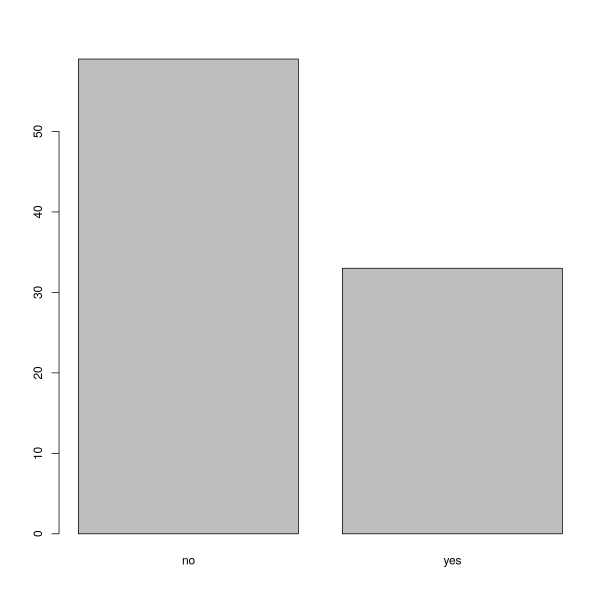
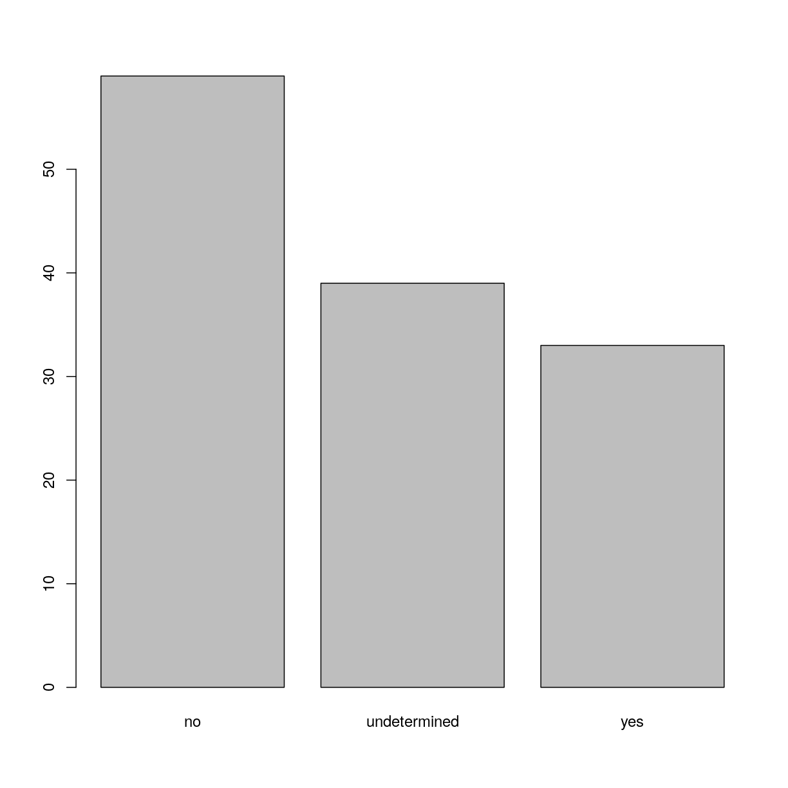
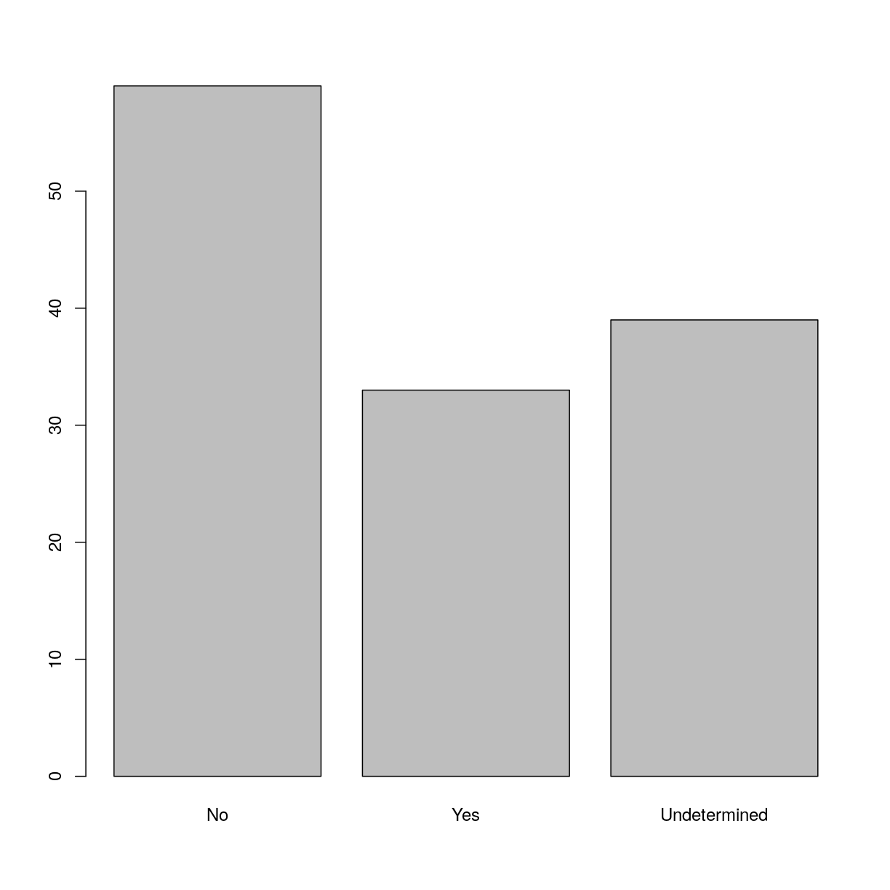

Presentation of the SAFI Data
SAFI (Studying African Farmer-Led Irrigation) is a study looking at farming and irrigation methods in Tanzania and Mozambique. The survey data was collected through interviews conducted between November 2016 and June 2017. For this workshop, we will be using a subset of the available data. For nformation about the full teaching dataset used in other lessons in this workshop, see the dataset description.
You can download the subset that we will be using at this link SAFI clean
Each row holds information for a single interview respondent, and the columns represent:
| column_name | description |
|---|---|
| key_id | Added to provide a unique Id for each observation. (The InstanceID field does this as well but it is not as convenient to use) |
| village | Village name |
| interview_date | Date of interview |
| no_membrs | How many members in the household? |
| years_liv | How many years have you been living in this village or neighboring village? |
| respondent_wall_type | What type of walls does their house have (from list) |
| rooms | How many rooms in the main house are used for sleeping? |
| memb_assoc | Are you a member of an irrigation association? |
| affect_conflicts | Have you been affected by conflicts with other irrigators in the area? |
| liv_count | Number of livestock owned. |
| items_owned | Which of the following items are owned by the household? (list) |
| no_meals | How many meals do people in your household normally eat in a day? |
| months_lack_food | Indicate which months, In the last 12 months have you faced a situation when you did not have enough food to feed the household? |
| instanceID | Unique identifier for the form data submission |
Although this dataset has been cleaned, it still contains missing data. THe missing data is represented by the word "NULL" in the dataset.
You are going load the data in R's memory using the function read_csv() from the readr package which is part of the tidyverse. So, before we can use the read_csv() function, we need to load the package. Also, as the missing data is encoded as "NULL" in the dataset, we can pass that information on to the function via the na argument so that the missing values will be imported as R NA values.
library(tidyverse) interviews <- read_csv("data/SAFI_clean.csv", na = "NULL")
This statement doesn't produce any output because, as you might recall, assignments don't display anything. If we want to check that our data has been loaded, we can see the contents of the data frame by typing its name: interviews. In RStudio you will also see it appear in the 'Environment' tab.
interviews ## Try also ## View(interviews)
# A tibble: 131 x 14
key_ID village interview_date no_membrs years_liv respondent_wall…
<int> <chr> <dttm> <int> <int> <chr>
1 1 God 2016-11-17 00:00:00 3 4 muddaub
2 1 God 2016-11-17 00:00:00 7 9 muddaub
3 3 God 2016-11-17 00:00:00 10 15 burntbricks
4 4 God 2016-11-17 00:00:00 7 6 burntbricks
5 5 God 2016-11-17 00:00:00 7 40 burntbricks
6 6 God 2016-11-17 00:00:00 3 3 muddaub
7 7 God 2016-11-17 00:00:00 6 38 muddaub
8 8 Chirod… 2016-11-16 00:00:00 12 70 burntbricks
9 9 Chirod… 2016-11-16 00:00:00 8 6 burntbricks
10 10 Chirod… 2016-12-16 00:00:00 12 23 burntbricks
# ... with 121 more rows, and 8 more variables: rooms <int>,
# memb_assoc <chr>, affect_conflicts <chr>, liv_count <int>,
# items_owned <chr>, no_meals <int>, months_lack_food <chr>,
# instanceID <chr>
Note
read_csv()assumes that fields are delineated by commas, however, in several countries, the comma is used as a decimal separator and the semicolon ( ; ) is used as a field delineator. If you want to read in this type of files in R, you can use theread_csv2function. It behaves exactly likeread_csvbut uses different parameters for the decimal and the field separators. If you are working with another format, they can be both specified by the user. Check out the help forread_csv()by typing?read_csvto learn more. There is also theread_tsv()for tab-separated data files, andread_delim()allows you to specify more details about the structure of your file.
What are data frames?
Data frames are the de facto data structure for tabular data in R, Most statistical and plotting function in R will expect the data to be provided in a data frame.
You can create a data frame can be created by hand, but most commonly they are generated as the output of other functions like read_csv() or read_table() read_delim(); in other words, when importing datasets.
A data frame is the representation of data in the format of a table where the columns are vectors that all have the same length. Because columns are vectors, each column must contain a single type of data (e.g., characters, integers, factors). For example, here is a figure depicting a data frame comprising a numeric, a character, and a logical vector.
![Data frame]()
When using read_csv(), the data frame created is of class tbl_df (called "tibble"). The type of data included in each column is listed in an abbreviated fashion below the column names. For instance, here key_ID is a column of integers (abbreviated <int>), village is a column of characters (<chr>) and the interview_date is a column in the "date and time" format (<dttm>).
Inspecting data frames
When calling a tbl_df object (like interviews here), there is already a lot of information about our data frame being displayed such as the number of rows, the number of columns, the names of the columns, and as we just saw the class of data stored in each column. However, there are functions to extract this information from data frames. Here is a non-exhaustive list of some of these functions. Let's try them out!
-
Size:
-
dim(interviews)- returns a vector with the number of rows in the first element, and the number of columns as the second element (the dimensions of the object) -
nrow(interviews)- returns the number of rows -
ncol(interviews)- returns the number of columns -
Content:
-
head(interviews)- shows the first 6 rows -
tail(interviews)- shows the last 6 rows -
Names:
-
names(interviews)- returns the column names (synonym ofcolnames()for
data.frameobjects) -
Summary:
-
str(interviews)- structure of the object and information about the class,
length and content of each column -
summary(interviews)- summary statistics for each column
Note: most of these functions are "generic", they can be used on other types of objects besides data frames.
# Size: dim(interviews) # returns a vector with the number of rows in the first element, and the number of columns as the second element (the dimensions of the object) nrow(interviews) # - returns the number of rows ncol(interviews) # - returns the number of columns # Content: head(interviews) # - shows the first 6 rows tail(interviews)# # - shows the last 6 rows # Names: names(interviews) # - returns the column names (synonym of colnames() for data.frame objects) # Summary: str(interviews) # - structure of the object and information about the class, length and content of each column summary(interviews) # - summary statistics for each column
Indexing and subsetting data frames
Our interviews data frame has rows and columns (it has 2 dimensions), if we want to extract some specific data from it, we need to specify the "coordinates" we want from it. Row numbers come first, followed by column numbers. However, note that different ways of specifying these coordinates lead to results with different classes.
## first element in the first column of the data frame (as a vector) interviews[1, 1]
# A tibble: 1 x 1
key_ID
<int>
1 1
## first element in the 6th column (as a vector) interviews[1, 6]
# A tibble: 1 x 1
respondent_wall_type
<chr>
1 muddaub
## first column of the data frame (as a vector) interviews[, 1]
# A tibble: 131 x 1
key_ID
<int>
1 1
2 1
3 3
4 4
5 5
6 6
7 7
8 8
9 9
10 10
# ... with 121 more rows
## first column of the data frame (as a data.frame) interviews[1]
# A tibble: 131 x 1
key_ID
<int>
1 1
2 1
3 3
4 4
5 5
6 6
7 7
8 8
9 9
10 10
# ... with 121 more rows
## first three elements in the 7th column (as a vector) interviews[1:3, 7]
# A tibble: 3 x 1
rooms
<int>
1 1
2 1
3 1
## the 3rd row of the data frame (as a data.frame) interviews[3, ]
# A tibble: 1 x 14
key_ID village interview_date no_membrs years_liv respondent_wall…
<int> <chr> <dttm> <int> <int> <chr>
1 3 God 2016-11-17 00:00:00 10 15 burntbricks
# ... with 8 more variables: rooms <int>, memb_assoc <chr>,
# affect_conflicts <chr>, liv_count <int>, items_owned <chr>,
# no_meals <int>, months_lack_food <chr>, instanceID <chr>
## equivalent to head_interviews <- head(interviews) head_interviews <- interviews[1:6, ]
: is a special function that creates numeric vectors of integers in increasing or decreasing order, test 1:10 and 10:1 for instance.
You can also exclude certain indices of a data frame using the "-" sign:
interviews[, -1] # The whole data frame, except the first column
# A tibble: 131 x 13
village interview_date no_membrs years_liv respondent_wall… rooms
<chr> <dttm> <int> <int> <chr> <int>
1 God 2016-11-17 00:00:00 3 4 muddaub 1
2 God 2016-11-17 00:00:00 7 9 muddaub 1
3 God 2016-11-17 00:00:00 10 15 burntbricks 1
4 God 2016-11-17 00:00:00 7 6 burntbricks 1
5 God 2016-11-17 00:00:00 7 40 burntbricks 1
6 God 2016-11-17 00:00:00 3 3 muddaub 1
7 God 2016-11-17 00:00:00 6 38 muddaub 1
8 Chirod… 2016-11-16 00:00:00 12 70 burntbricks 3
9 Chirod… 2016-11-16 00:00:00 8 6 burntbricks 1
10 Chirod… 2016-12-16 00:00:00 12 23 burntbricks 5
# ... with 121 more rows, and 7 more variables: memb_assoc <chr>,
# affect_conflicts <chr>, liv_count <int>, items_owned <chr>,
# no_meals <int>, months_lack_food <chr>, instanceID <chr>
interviews[-c(7:131), ] # Equivalent to head(interviews)
# A tibble: 6 x 14
key_ID village interview_date no_membrs years_liv respondent_wall…
<int> <chr> <dttm> <int> <int> <chr>
1 1 God 2016-11-17 00:00:00 3 4 muddaub
2 1 God 2016-11-17 00:00:00 7 9 muddaub
3 3 God 2016-11-17 00:00:00 10 15 burntbricks
4 4 God 2016-11-17 00:00:00 7 6 burntbricks
5 5 God 2016-11-17 00:00:00 7 40 burntbricks
6 6 God 2016-11-17 00:00:00 3 3 muddaub
# ... with 8 more variables: rooms <int>, memb_assoc <chr>,
# affect_conflicts <chr>, liv_count <int>, items_owned <chr>,
# no_meals <int>, months_lack_food <chr>, instanceID <chr>
So far we have been accessing the rows and columns of our data frame by explicitly referring to index numbers of the columns ands rows.
It is more usual that we will want to refer to columns by their names.
interviews["village"] # Result is a data frame interviews[, "village"] # Result is a data frame interviews[["village"]] # Result is a vector interviews$village # Result is a vector
In RStudio, you can use the autocompletion feature to get the full and correct names of the columns.
Exercise
Create a data frame (
interviews_100) containing only the data in
row 100 of theinterviewsdataset.Notice how
nrow()gave you the number of rows in a data frame?
- Use that number to pull out just that last row in the data frame.
- Compare that with what you see as the last row using
tail()to make
sure it's meeting expectations.- Pull out that last row using
nrow()instead of the row number.- Create a new data frame (
interviews_last) from that last row.Use
nrow()to extract the row that is in the middle of the data frame.
Store the content of this row in an object namedinterviews_middle.Combine
nrow()with the-notation above to reproduce the behavior of
head(interviews), keeping just the first through 6th rows of the interviews
dataset.
Solution - click me
Solution
## 1. interviews_100 <- interviews[100, ] ## 2. # Saving `n_rows` to improve readability and reduce duplication n_rows <- nrow(interviews) interviews_last <- interviews[n_rows, ] ## 3. interviews_middle <- interviews[n_rows / 2, ] ## 4. interviews_head <- interviews[-(7:n_rows), ]
Factors
R has a special data class, called factor, to deal with categorical data that you may encounter when creating plots or doing statistical analyses. Factors are very useful and actually contribute to making R particularly well suited to working with data. So we are going to spend a little time introducing them.
Factors represent categorical data. They are stored as integers associated with labels and they can be ordered or unordered. While factors look (and often behave) like character vectors, they are actually treated as integer vectors by R. So you need to be very careful when treating them as strings.
Once created, factors can only contain a pre-defined set of values, known as levels. By default, R always sorts levels in alphabetical order. For instance, if you have a factor with 2 levels:
respondent_floor_type <- factor(c("earth", "cement", "cement", "earth"))
R will assign 1 to the level "cement" and 2 to the level "earth" (because c comes before e, even though the first element in this vector is "earth"). You can see this by using the function levels() and you can find the number of levels using nlevels():
levels(respondent_floor_type)
[1] "cement" "earth"
nlevels(respondent_floor_type)
[1] 2
Sometimes, the order of the factors does not matter, other times you might want to specify the order because it is meaningful (e.g., "low", "medium", "high"), it improves your visualization, or it is required by a particular type of analysis. Here, one way to reorder our levels in the respondent_floor_type vector would be:
respondent_floor_type # current order
[1] earth cement cement earth
Levels: cement earth
respondent_floor_type <- factor(respondent_floor_type, levels = c("earth", "cement")) respondent_floor_type # after re-ordering
[1] earth cement cement earth
Levels: earth cement
In R's memory, these factors are represented by integers (1, 2), but are more informative than integers because factors are self describing: "cement", "earth" is more descriptive than 1, and 2. Which one is "earth"? You wouldn't be able to tell just from the integer data. Factors, on the other hand, have this information built in. It is particularly helpful when there are many levels. It also makes renaming levels easier. Let's say we made a mistake and need to recode "cement" to "brick".
levels(respondent_floor_type)
[1] "earth" "cement"
levels(respondent_floor_type)[2] <- "brick" levels(respondent_floor_type)
[1] "earth" "brick"
respondent_floor_type
[1] earth brick brick earth
Levels: earth brick
Converting factors
If you need to convert a factor to a character vector, you use
as.character(x).
as.character(respondent_floor_type)
[1] "earth" "brick" "brick" "earth"
Converting factors where the levels appear as numbers (such as concentration levels, or years) to a numeric vector is a little trickier. The as.numeric() function returns the index values of the factor, not its levels, so it will result in an entirely new (and unwanted in this case) set of numbers. One method to avoid this is to convert factors to characters, and then to numbers. Another method is to use the levels() function. Compare:
year_fct <- factor(c(1990, 1983, 1977, 1998, 1990)) as.numeric(year_fct) # Wrong! And there is no warning...
[1] 3 2 1 4 3
as.numeric(as.character(year_fct)) # Works...
[1] 1990 1983 1977 1998 1990
as.numeric(levels(year_fct))[year_fct] # The recommended way.
[1] 1990 1983 1977 1998 1990
Notice that in the recommended levels() approach, three important steps occur:
- We obtain all the factor levels using
levels(year_fct) - We convert these levels to numeric values using
as.numeric(levels(year_fct)) - We then access these numeric values using the underlying integers of the vector
year_fctinside the square brackets
Renaming factors
When your data is stored as a factor, you can use the plot() function to get a quick glance at the number of observations represented by each factor level. Let's extract the memb_assoc column from our data frame, convert it into a factor, and use it to look at the number of interview respondents who were or were not members of an irrigation association:
## create a vector from the data frame column "memb_assoc" memb_assoc <- interviews$memb_assoc ## convert it into a factor memb_assoc <- as.factor(memb_assoc) ## let's see what it looks like memb_assoc
[1] <NA> yes <NA> <NA> <NA> <NA> no yes no no <NA> yes no <NA>
[15] yes <NA> <NA> <NA> <NA> <NA> no <NA> <NA> no no no <NA> no
[29] yes <NA> <NA> yes no yes yes yes <NA> yes <NA> yes <NA> no
[43] no <NA> no no yes <NA> <NA> yes <NA> no yes no <NA> yes
[57] no no <NA> no yes <NA> <NA> <NA> no yes no no no no
[71] yes <NA> no yes <NA> <NA> yes no no yes no no yes no
[85] yes no no <NA> yes yes yes yes yes no no no no yes
[99] no no
[ reached getOption("max.print") -- omitted 31 entries ]
Levels: no yes
# bar plot of the number of interview respondents who were # members of irrigation association: plot(memb_assoc)
Looking at the plot compared to the output of the vector, we can see that in
addition to "no"s and "yes"s, there are about some respondents for which the
information about whether they were part of an irrigation association hasn't
been recorded, and encoded as missing data. They do not appear on the plot.
Let's encode them differently so they can counted and visualized in our plot.
## Let's recreate the vector from the data frame column "memb_assoc" memb_assoc <- interviews$memb_assoc ## replace the missing data with "undetermined" memb_assoc[is.na(memb_assoc)] <- "undetermined" ## convert it into a factor memb_assoc <- as.factor(memb_assoc) ## let's see what it looks like memb_assoc
[1] undetermined yes undetermined undetermined undetermined
[6] undetermined no yes no no
[11] undetermined yes no undetermined yes
[16] undetermined undetermined undetermined undetermined undetermined
[21] no undetermined undetermined no no
[26] no undetermined no yes undetermined
[31] undetermined yes no yes yes
[36] yes undetermined yes undetermined yes
[41] undetermined no no undetermined no
[46] no yes undetermined undetermined yes
[51] undetermined no yes no undetermined
[56] yes no no undetermined no
[61] yes undetermined undetermined undetermined no
[66] yes no no no no
[71] yes undetermined no yes undetermined
[76] undetermined yes no no yes
[81] no no yes no yes
[86] no no undetermined yes yes
[91] yes yes yes no no
[96] no no yes no no
[ reached getOption("max.print") -- omitted 31 entries ]
Levels: no undetermined yes
## bar plot of the number of interview respondents who were ## members of irrigation association: plot(memb_assoc)
Exercise
Rename the levels of the factor to have the first letter in uppercase:
"No","Undetermined", and "Yes".Now that we have renamed the factor level to "Undetermined", can you
recreate the barplot such that "Undetermined" is last (after "Yes")?
Solution - click me
Solution
levels(memb_assoc) <- c("No", "Undetermined", "Yes") memb_assoc <- factor(memb_assoc, levels = c("No", "Yes", "Undetermined")) plot(memb_assoc)
Formatting Dates
One of the most common issues that new (and experienced!) R users have is converting date and time information into a variable that is appropriate and usable during analyses. In our dataset, we have a column interview_date which contains information about the year, month, and day that the interview was conducted. Let's convert those dates into three separate columns.
str(interviews)
We are going to use the package lubridate (which is part of the tidyverse package; learn more here) to work with dates. lubridate gets installed as part as the tidyverse installation. When you load the tidyverse (library(tidyverse)), the core packages (the packages used in most data analyses) get loaded. lubridate however does not belong to the core tidyverse, so you have to load explicitly with library(lubridate)
Start by loading the required package:
library(lubridate)
The lubridate function ymd() takes a vector representing year, month, and day, and converts it to a Date vector. Date is a class of data recognized by R as being a date and can be manipulated as such. The argument that the function requires is flexible, but, as a best practice, is a character vector formatted as "YYYY-MM-DD".
Let's extract our interview_date column and inspect the structure:
dates <- interviews$interview_date str(dates)
POSIXct[1:131], format: "2016-11-17" "2016-11-17" "2016-11-17" "2016-11-17" "2016-11-17" ...
When we imported the data in R, read_csv() recognized that this column contained date information. We can now use the day(), month() and year() functions to extract this information from the date, and create new columns in our data frame to store it:
interviews$day <- day(dates) interviews$month <- month(dates) interviews$year <- year(dates) interviews
# A tibble: 131 x 17
key_ID village interview_date no_membrs years_liv respondent_wall…
<int> <chr> <dttm> <int> <int> <chr>
1 1 God 2016-11-17 00:00:00 3 4 muddaub
2 1 God 2016-11-17 00:00:00 7 9 muddaub
3 3 God 2016-11-17 00:00:00 10 15 burntbricks
4 4 God 2016-11-17 00:00:00 7 6 burntbricks
5 5 God 2016-11-17 00:00:00 7 40 burntbricks
6 6 God 2016-11-17 00:00:00 3 3 muddaub
7 7 God 2016-11-17 00:00:00 6 38 muddaub
8 8 Chirod… 2016-11-16 00:00:00 12 70 burntbricks
9 9 Chirod… 2016-11-16 00:00:00 8 6 burntbricks
10 10 Chirod… 2016-12-16 00:00:00 12 23 burntbricks
# ... with 121 more rows, and 11 more variables: rooms <int>,
# memb_assoc <chr>, affect_conflicts <chr>, liv_count <int>,
# items_owned <chr>, no_meals <int>, months_lack_food <chr>,
# instanceID <chr>, day <int>, month <dbl>, year <dbl>
Notice the three new columns at the end of our data frame.